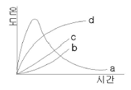
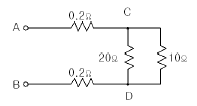
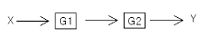
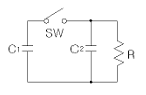
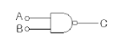
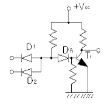
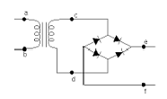
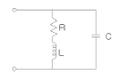

소방설비기사(전기분야) (2006-09-10 기출문제)
1과목: 소방원론
1. 건물화재시 패닉(panic)의 발생원인과 직접적인 관계가 없는 것은?
- 연기에 의한 시계 제한
- 유독가스에 의한 호흡 장애
- 외부와 단절되어 고립
- 건물의 불연 내장재
(정답률: 91%)

2. 자연발화의 예방을 위한 대책으로 옳지 않은 것은?
- 통풍이나 환기로 열의 축적을 방지한다.
- 주위 온도를 낮게 하여 반응계에 이상이 생기지 않도록 한다.
- 열전도성을 나쁘게 한다.
- 칼륨 등 석유 중에 보관하는 물질은 용기가 파손 되지 않도록 한다.
(정답률: 87%)
3. 다음 알코올 중 위험물에 속하지 않는 것은?
- 에틸알코올
- 부틸알코올
- 메틸알코올
- 프로필알코올
(정답률: 62%)
4. 공기의 평균 분자량이 29라 할 때 이산화탄소의 증기 비중은 약 얼마인가?
- 1.44
- 1.52
- 2.88
- 3.24
(정답률: 79%)
5. 그림에서 내화조 건물의 화재온도 및 시간 표준극선은?

- a
- b
- c
- d
(정답률: 74%)
6. Stack Effect란?
- 굴뚝효과
- 연소 저지효과
- 연기 유동효과
- 화염 전파효과
(정답률: 86%)
7. 황린과 적린이 서로 동소체라는 것을 증명하는데 가장 효과적인 실험은?
- 비중을 비교한다.
- 착화점을 비교한다.
- 유기용제에 대한 용해도를 비교한다.
- 연소 생성물을 확인한다.
(정답률: 76%)
8. 화재발생시 피난기구로 직접 활용할 수 없는 것은?
- 완강기
- 무선통신보조설비
- 피난사다리
- 구조대
(정답률: 87%)
9. 다음 중 연소범위가 가장 넓은 물질은?
- 아세틸렌
- 에틸렌
- 이황화탄소
- 메탄
(정답률: 76%)
10. Flash over를 가장 바르게 표현한 것은?
- 소화현상이다.
- 건물 외부에서 연소가스의 폭발적인 방출현상이다.
- 폭발적인 화재의 확대현상이다.
- 폭발 및 건물의 붕괴현상이다.
(정답률: 84%)
11. 제1종 분말 소화약제인 중탄산나트륨은 어떤 색으로 착색되어 있는가?
- 백색
- 담회색
- 담홍색
- 회색
(정답률: 75%)
12. 페놀수지, 멜라민수지 등이 연소될 때 발생되며 눈, 코, 인후 및 폐에 매우 자극성이 큰 유독성 가스는?
- CO2
- SO2
- HBr
- NH3
(정답률: 62%)
13. 소화(消火)의 원리에 해당하지 않은 것은?
- 산소공급원의 농도를 낮추어 연소가 지속될 수 없도록 한다.
- 가연성 물질을 발화점 이하로 냉각시킨다.
- 가열원을 계속 공급한다.
- 화학적인 방법으로 연쇄반응을 억제시킨다.
(정답률: 83%)
14. 물의 소화력을 보강하기 위해 첨가하는 약제로서 물의 표면장력을 낮추어 침투효과를 높이기 위한 첨가제는?
- 증첩제
- 강화액
- 침투제
- 유화제
(정답률: 70%)
15. 제1류 위험물로 그 성질이 산화성 고체인 것은?
- 황린
- 아염소산염류
- 금속분류
- 유황
(정답률: 80%)
16. 표준상태에서 11.2L의 기체질량이 22g 이었다면 이 기체의 분자량은 얼마인가? 단, 이상기체라고 한다.)
- 22
- 35
- 44
- 56
(정답률: 77%)
17. 연소를 이루기 위한 열원으로서 전기에너지가 아닌 것은?
- 아크열
- 유도열
- 마찰열
- 저항열
(정답률: 74%)
18. 순수한 액화석유가스(LPG)의 일반적 성질에 대한 설명으로 잘못된 것은?
- 휘발유 등 유기용매에 녹는다.
- 액화하면 물보다 가볍다.
- 액화석유가스 증기는 공기보다 무겁다.
- 무색으로 독특한 냄새가 있다.
(정답률: 54%)
19. 화재의 종류에서 급수는 C급이며 화재의 종류는 전기화재이다. 표시색은?
- 백색
- 황색
- 무색
- 청색
(정답률: 80%)
20. 화재표면온도가 2배로 되면 복사에너지는 몇 배로 증가 되는가?
- 2
- 4
- 8
- 16
(정답률: 79%)
2과목: 소방전기회로
21. 전기기기에 생기는 손실중 권선의 저항에 의하여 생기는 손실은?
- 철손
- 구리손
- 포유부하손
- 유전체손
(정답률: 60%)
22. SCR의 동작상태중 래칭전류(Latching Current)에 대한 설명으로 옳은 것은?
- 다이리스터의 게이트를 개방한 상태에서 전압을 상승하면 급히 증가하게 되는 전류
- 트리거 신호가 제거된 직후에 다이리스터를 ON상태로 전환하는데 필요로 하는 최소한의 주전류
- 다이이스터가 ON상태를 유지하다가 OFF상태로 전환하는데 필요로 하는 최소한의 전류
- 게이트를 개방한 상태에서 다이리스터가 도통상태를 유지하기 위한 최소의 순전류
(정답률: 64%)
23. 다음 소자 중에서 온도 보상용으로 쓰이는 것은?
- 서미스터
- 바리스터
- 제너다이오드
- 터널다이오드
(정답률: 81%)
24. 한 조각의 실리콘 속에 많은 트랜지스터, 다이오드, 저항등을 넣고 상호 배선을 하여 하나의 회로에서의 기능을 갖게 한 것은?
- 포토 트랜지스터
- 서미스터
- 바리스터
- IC
(정답률: 73%)
25. 서로 다른 금속선으로 된 폐회로의 두 접합점의 온도를 다르게 하였을 때 열기전력이 발생하는 효과는?
- Tomson효과
- Pinch효과
- Peltire효과
- Seeback효과
(정답률: 57%)
26. 어떤 정현파 전압의 평균값이 191V이면 최대값은 약 몇 V 인가?
- 100
- 200
- 300
- 600
(정답률: 67%)
27. 분전반에 주개폐기가 필요할 때에는 어떤 개폐기를 사용 하는가?
- 자동차단기
- 배선용차단기
- 텀블러스위치
- 단로기
(정답률: 73%)
28. 축전지의 내부저항을 측정하는데 가장 접합한 것은?
- 휘이트스토운 브리지
- 미끄럼줄 브리지
- 코올라우시 브리지
- 캘빈더블 브리지
(정답률: 74%)
29. 직류전동기의 회전수는 자속이 감소하면 어떻게 되는가?
- 속도가 저하한다.
- 불변이다.
- 전동기가 정지한다.
- 속도가 상승한다.
(정답률: 59%)
30. 회로에서 CD간의 전압을 100V로 할 때 AB간의 단자전압은 약 몇 V 인가?

- 100
- 102
- 104
- 106
(정답률: 43%)
31. 그림과 같은 시스템의 등가합성 전달함수는?

- G1 + G2
- G1 - G2
- G1 ㆍ G2
- G1 / G2
(정답률: 68%)
32. C1=1μF, C2=1μF, R=2MΩ 일 때 C1의 초기 충전전압은 10V 이다. SW 를 달으면 방전을 하게 되는데 이 SW를 달은 후 시간이 충분히 경과 하면 C2양단에 걸리는 전압은 몇 V 가 되는가?

- 0
- 2
- 5
- 10
(정답률: 39%)
33. 그림과 같은 게이트의 명칭은?

- AND
- NAND
- OR
- NOR
(정답률: 63%)
34. 제어량의 값이 어떤 값인가의 상태 여부에 따라 신호를 발생하는 부분을 무엇이라 하는가?
- 조작부
- 출력부
- 검출부
- 제어부
(정답률: 38%)
35. 4Ω, 5Ω, 8Ω의 저항 3개를 병렬로 접속하고 여기에 40V의 전압을 가했을 때 전전류는 몇 A 인가?
- 5
- 8
- 12
- 23
(정답률: 50%)
36. 계측방법이 잘못된 것은?
- 훅크온 메타에 의한 전류 측정
- 회로시험기에 의한 저항 측정
- 메거에 의한 접지저항 측정
- 전류계, 전압계, 전력계에 의한 역률 측정
(정답률: 72%)
37. 그림과 같은 무접점회로는 어떤 논리회로인가?

- AND
- OR
- NOR
- NAND
(정답률: 75%)
38. 그림은 비상시에 대비한 예비전원의 공급회로이다. 직류전압을 일정하게 유지하기 위하여 콘덴서를 설치한다면 그 위치로 적당한 곳은?

- a와 b사이
- c와 d사이
- e와 f사이
- a와 c사이
(정답률: 76%)
39. 전류의 열작용과 가장 관계가 있는 법칙은?
- 옴의 법칙
- 줄의 법칙
- 플레밍의 법칙
- 키르히호프의 법칙
(정답률: 72%)
40. 회로에서 공진상태의 임피던스는 몇 Ω 인가?

- L / CR
- CR / L
- CL / R
- R / CL
(정답률: 63%)
3과목: 소방관계법규
41. 지정수량의 몇 배 이상의 위험물을 저장하는 옥외저장소에는 화재예방을 위한 예방규정을 정하여야 하는가?
- 10배
- 100배
- 150배
- 200배
(정답률: 57%)
42. 소화활동 및 화재조사를 원활히 수행하기 위해 화재현장에 출입을 통제하기 위하여 설정하는 것은?
- 화재경계지구 지정
- 소방활동구역 설정
- 방화제한구역 설정
- 화재통제구역 설정
(정답률: 64%)
43. 제4류위험물을 저장하는 위험물제조소의 주의사항을 표시한 게시판의 내용으로 적합한 것은?
- 물기주의
- 물기엄금
- 화기주의
- 화기엄금
(정답률: 74%)
44. 한국소방검정공사의 업무로 옳지 않은 것은?
- 소방용기계ㆍ기구에 대한 검사기술의 조사ㆍ연구
- 소방시설 및 위험물안전관리에 관한 조사ㆍ연구 및 기술지원
- 소방시설 및 위험물안전관리에 관한 자료ㆍ정보의 수집출판, 기술강습 및 홍보
- 소방기술과 안전관리에 관한 교육 및 조사ㆍ연구
(정답률: 41%)
45. 소방기술자는 동시에 몇 개의 사업체에 취업이 가능한가?
- 1개
- 2개
- 3개
- 4개
(정답률: 74%)
46. 방염업의 종류가 아닌 것은?
- 섬유류 방염업
- 합성수지류 방염업
- 실내장식물 방염업
- 합판ㆍ목재류 방염업
(정답률: 59%)
47. 소방대(消防隊)에 해당 되지 않는 사람은?
- 소방공무원
- 의무소방원
- 자제소방대원
- 의용소방대원
(정답률: 80%)
48. 소방시설 공사의 시공을 할 경우 대통령령이 정하는 경우에는 도급 받은 소방시설공사의 일부를 몇 차에 한하여 제3자에게 하도급할 수 있는가?
- 4차
- 2차
- 3차
- 1차
(정답률: 62%)
49. 위험물의 제조소 등을 설치하고자 할 때 설치장소를 관할하는 누구의 허가를 받아야 하는가?
- 행정자치부장관
- 소방방재청장
- 특별시장ㆍ광역시장 또는 도지사
- 기초 지방 자치 단체장
(정답률: 68%)
50. 다음 중 상주공사감리 대상에 대한 설명으로 알맞은 것은?
- 연면적 30,000m2이상의 특정소방대상물에 대한 소방시설 공사
- 지하층을 제외한 층수가 16층 이상인 건축물에 대한 소방시설 공사
- 지하층을 제외한 700세대 이상인 아파트에 대한 소방시설 공사
- 지하층을 제외한 층수가 16층 이상으로 900세대 이상인 아파트에 대한 소방시설 공사
(정답률: 51%)
51. 다음 용어의 정의에 대한 설명 중 바르지 못한 것은?
- 피난층이란 곧바로 지상으로 갈 수는 없지만 출입구가 있는 층을 의미한다.
- 비상구란 화재발생시 지상 또는 안전한 장소로 피난할 수 있는 가로75cm이상, 세로150cm이상 크기의 출입구를 의미한다.
- 무창층이란 개구부의 합계의 면적이 당해 층의 바닥면적의 30분의 1이하가 되는 층을 말한다.
- 실내장식물이란 건축물 내부의 미관 또는 장식을 위하여 천장 또는 벽에 설치하는 것으로서 가구류ㆍ집기류를 제외한다.
(정답률: 62%)
52. 방염업자가 소방관계법령을 위반하여 방염업의 등록증을 다른 자에게 빌려 주었을 때 부고할 수 있는 과징금의 최고 금액으로 맞는 것은?
- 1천만원
- 2천만원
- 3천만원
- 5천만원
(정답률: 58%)
53. 소방기술심의위원회의 심의사항에 해당하지 않는 것은?
- 화재안전기준에 관한 사항
- 소방시설공사 하자의 판단기준에 관한 사항
- 소방시설의 설계 및 공사감리의 방법에 관한 사항
- 소방기술 등에 관하여 소방방재청장이 정하는 사항
(정답률: 30%)
54. 위험물 제조소 표지의 바탕색은?
- 청색
- 적색
- 흑색
- 백색
(정답률: 65%)
55. 건축허가 등의 동의 대상물로서 옳지 않은 것은?
- 연면적이 400m2이상인 건축물
- 청소년시설로서 연면적 100m2이상인 것
- 지하층 또는 무창층이 있는 건축물로서 바닥면적이 150m2이상인 층이 있는 것
- 방송용 송ㆍ수신탑
(정답률: 53%)
56. 자동화재탐지설비를 설치하여야 할 특저소방대상물로서 옳지 않은 것은?
- 숙박시설로서 연면적 600m2이상인 것
- 의료시설로서 연면적 600m2이상인 것
- 지하구
- 길이 500m 이상의 터널
(정답률: 60%)
57. 시ㆍ도지사는 도시의 건물 밀집지역등 화재가 발생할 우려가 높거나 화재가 발생하는 경우 그로 인하여 피해가 클 것으로 예상되는 일정한 구역으로서 대통령령이 저하는 지역을 어떤지구로 지정할 수 있는가?
- 화재경계지구
- 화재경계구역
- 방화경계구역
- 재난재해지역
(정답률: 67%)
58. 화재경계지구의 지정대상 지역으로서 거리가 먼 것은?
- 백화점과 대형판매시설이 있는 지역
- 시장지역 및 공장ㆍ창고가 밀집한 지역
- 석유화학제품을 생산하는 공장이 있는 지역
- 소방시설ㆍ소방용수시설 또는 소방출동로가 없는 지역
(정답률: 50%)
59. 공사업자가 소방시설공사를 마친 때에는 누구에게 완공검사를 받는가?
- 소방본부장 또는 소방서장
- 군수
- 시ㆍ도지사
- 소방방재청장
(정답률: 71%)
60. 무창층에서 개구부라 함은 해당층의 바닥면으로부터 개구부 밑부분 까지의 높이가 몇 m 이내를 말하는가?
- 1.0m 이내
- 1.2m 이내
- 1.5m 이내
- 1.7m 이내
(정답률: 61%)
4과목: 소방전기시설의 구조 및 원리
61. 비상콘센트설비에 있어서 하나의 전용회로에 설치하는 비상콘센트는 몇 개 이하로 하여야 하는가?
- 4개
- 6개
- 7개
- 10개
(정답률: 80%)
62. 누전경보기 수신부의 설치 장소로서 옳은 것은?
- 화학류를 제조하거나 저장 또는 취급하는 장소
- 습도가 높은 장소
- 온도의 변화가 완만한 장소
- 가연성의 먼지가 다량으로 체류하는 장소
(정답률: 76%)
63. 무선통신보조설비에서 무선기기 접속단자 보호함 표면은 어떤색으로 도색하여야 하는가?
- 적색
- 청색
- 흑색
- 특별히 어떤 색을 명시하지 않음
(정답률: 47%)
64. 자동화재탐지설비의 감지기 중 아날로그식, 다신호식 감지기나 R형 수신기용 감지기 배선의 전자파 방해를 방지하기 위해 사용하는 전선은?
- 반경동선
- 리드용 1종 케이블
- 쉴드선
- MI케이블
(정답률: 66%)
65. 비상방송설비의 전원으로 축전지설비를 설치하였을 때 감시상태의 지속시간은 몇 분이며, 유효하게 몇 분 이상 경보할 수 있어야 하는가?
- 감시지속시간 : 60분, 경보시간 : 10분
- 감시지속시간 : 120분 경보시간 : 20분
- 감시지속시간 : 30분, 경보시간 : 30분
- 감시지속시간 : 30분, 경보시간 : 5분
(정답률: 80%)
66. 비상방송설비의 화재안전기준으로 옳은 것은?
- 음향조정기의 배선은 3선식으로 설치
- 조작부의 스위치는 0.8m 이상 2.5m 이하의 높이에 설치
- 확성기의 유효반지름은 50m 이하가 되도록 설치
- 다른 방송설비와 공용 불가능
(정답률: 77%)
67. 무선통신보조설비에 대한 설명 중 맞지 않은 것은?
- 소방전용주파수에서 전차의 전송 또는 복사에 적합한 것으로서 소방전용의 것으로 할 것
- 누설동축케이블의 끝부분에는 무반사종단저항을 견고하게 설치할 것
- 분파기의 임피던스는 50Ω의 것으로 할 것
- 지상에 설치하는 무선기기의 접속단자는 보행거리 400m이내마다 설치 할 것
(정답률: 75%)
68. 자동화재탐지설비의 경계구역설정 기준으로 맞는 것은?
- 하나의 경계구역이 3개 이상의 건축물에 미치지 아니 할 것
- 하나의 경계구역의 면적은 400m2이하로 하고 한 변의 길이는 60m이하로 할 것
- 지하구 또는 터널에 있어서 하나의 경계구역의 길이는 700m 이하로 할 것
- 하나의 경계구역이 4개 이상의 층에 미치지 아니할 것
(정답률: 74%)
69. 피난기구의 용어 중 맞지 않은 것은?
- “피난밧줄” 은 급격한 하강을 방지하기 위해 매듭 등을 만들어 놓은 밧줄을 말한다.
- “구조대” 라 함은 포지 등을 사용하여 자우형태로 만든것으로서 화재시 사용자가 그 내부에 들어가서 대피하는 것을 말한다.
- “간이완강기” 한 사용자의 체중에 따라 자동적으로 하강되는 기구로서 사용자가 연속적으로 사용할 수 있는 것을 말한다.
- “완강기” 란 사용자의 체중에 다라 자동적으로 하강되는 기구중 사용자가 교대하여 연속적으로 사용할 수 있는 것을 말한다.
(정답률: 72%)
70. 누전경보기의 전원은 분전반으로부터 전용회로로 하고 배선용차단기는 몇 A이하의 것으로 각 극을 개폐할 수 있는 것으로 설치하여야 하는가?
- 35A 이하
- 30A 이하
- 25A 이하
- 20A 이하
(정답률: 78%)
71. 단독경보형감지기를 설치하여야 하는 특정소방대상물로 맞는 것은?
- 연면적 1천 제곱미터 미만의 아파트
- 연면적 1천 제곱미터 이상의 기숙사
- 교육연구시설 내에 있는 합숙소 또는 기숙사로서 연면적 2천 제곱미터 이상인 것
- 연면적 600제곱미터 이상의 기숙사
(정답률: 40%)
72. 내화배선에서 사용하는 전선의 종류가 아닌 것은?
- 600V 2종 비닐절연 전선
- 하이파론 절연전선
- 5불화에틸네 절연전선
- 연피케이블
(정답률: 32%)
73. 보행거리가 50m 인 지하상가 및 지하역사에 휴대용 비상조명등을 설치하고자 한다. 최소 설치 개수는?
- 1개
- 2개
- 3개
- 6개
(정답률: 53%)
74. 다음 중 비상경보설비의 설치기준으로 적절한 것은?
- 음향장치의 음량은 부착된 음향장치의 중심으로부터 1m 떨어진 위치에서 90폰 이상이 되는 것으로 할 것
- 발신기의 위치표시등은 바닥으로부터 0.8m 이상 1.5m 이하의 높이에 설치할 것
- 발신기는 각 소방대상물의 각 부분으로부터 수평거리 25m 이상이 되도록 할 것
- 지하가중 터널의 경우 음향장치는 수평거리 50m 이내마다 설치할 것
(정답률: 39%)
75. 자동화재속보설비의 속보기는 자동화재탐지설비로부터 작동신호를 수신하거나 수동으로 동작시크는 경우 20초이내에 소방관서에 자동적으로 신호를 발하여 통보하되, 몇 회 이상 속보할 수 있어야 하는가?
- 2회
- 3회
- 4회
- 5회
(정답률: 86%)
76. 무선통신보조설비의 증폭기에 부착된 비상전원이 유효하게 작동해야 하는 기준 시간으로 알맞은 것은?
- 20분 이상
- 25분 이상
- 30분 이상
- 60분 이상
(정답률: 65%)
77. 다음 중 단자부와 마감 고정금구와의 설치간격을 10cm 이내로 설치하고, 굴곡반경은 5cm이상으로 하여야 하는 감지기는?
- 차동식스포트형감지기
- 정온식감지선형감지기
- 광전식스포트형감지기
- 불꽃감지기
(정답률: 61%)
78. 객석내의 통로의 직선부분의 길이가 85m 이다. 객석유도등을 몇 개 설치하여야 하는가?
- 17개
- 19개
- 21개
- 22개
(정답률: 82%)
79. 자동화재탐지설비의 수신기의 설치기준으로 옳지 않은 것은?
- 수위실등 상시 사람이 근무하는 장소에 설치할 것
- 수신기가 설치된 장소에는 경계구역 일람도를 비치할 것
- 하나의 경계구역은 하나의 표시등 또는 하나의 문자로 표시되도록할 것
- 수신기의 조작스위치는 바닥으로부터 높이 2.0m이상 2.5m이하에 설치할 것
(정답률: 86%)
80. 피난구유도등의 설치위치로 틀린 것은?
- 피난구의 바닥으로부터 높이 1.5m이하의 곳에 설치
- 직통계단ㆍ지공계단의 계단실 및 그 부속실의 출입구에 설치
- 옥내로부터 직접 지상으로 통하는 출입구 및 그 부속실의 출입구에 설치
- 안전구획 거실로 통하는 출입구에 설치
(정답률: 57%)